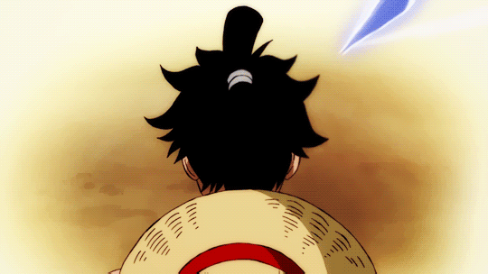

Haoshoku Haki is a rare form of Haki that allows the user to exert their own willpower over others. This type of Haki cannot be attained through training and only one in several million people are born with this ability. It is said that whoever possesses this type of Haki has the qualities of a king, and are known as Supreme Rulers (覇王 Haō?). Haoshoku Haki is considered an extremely dangerous threat and a highly valuable asset by powerful groups such as the Marine Admirals and the Four Emperors.
Busoshoku Haki is a form of Haki that allows the user to use their own spiritual energy to create, in essence, an invisible armor around themself, providing incredible offensive and defensive capabilities. Notably, this form of Haki can be used to injure Devil Fruit users that are otherwise immune to ordinary physical attacks, such as Logia users. In Wano Country, Busoshoku is known as Ryuo (流桜 Ryūō?, literally meaning "Flowing Sakura"), founded on the concept of inner flow.[3]
 Kenbunshoku Haki is a form of Haki that grants the user a sixth sense that allows them to sense the presence, strength, and emotions of others, as well as gain limited precognitive abilities.[3] In Skypiea, Kenbunshoku is known as Mantra (心綱マントラ Mantora?, literally meaning "Mind Rope").